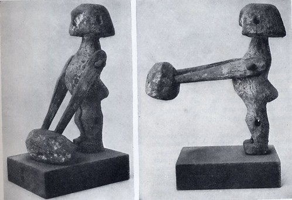

-
Preface:
A.I. and robots are often scary, shown as evil overlords taking our jobs, and taking over the world. In reality A.I. are just math. However, what A.I. can do can be even more significant than them taking over the world. A.I. finds connections between objects, and can recognize connections between similar objects. When you think of A.I, you might think of a voice assistant, or an app that can identify plants. What A.I. is really used for, is much more powerful. A.I. can process massive amounts of data, finding out everything from someone with almost no information. A.I. make up autonomous weapons, which have been outlawed for being too lethal. A.I. is our future for more than the reasons you think. What A.I. is not, is sentient. A.I. can give a semblance of sentience, though it is most useful for data. An A.I. can search and interpret massive amounts of data, and give meaningful results. A bulk of the internet is run by such A.I. Consider google, which collects your actions to decide what you will like best. This can be dangerous however, such as A.I. having a programmed bias against non-white males, or directing people towards extremist groups. A.I. is a powerful tool, but one we need to control, because in the end, we made it.
-
Automata begins to be created in Egypt
300 BCAutomata begins to be created in Egypt, and are often used as a sign of power. The automata serve little use besides to convey power.
 -
Gulliver’s travels, first showing of machine like creatures that show thought
1727This was an influential book that showed representations of robots that are still often held today. This book inspired how robots are designed and viewed today.

-
Gakutensoku, a robot that could change expressions and write was created.
1929Another automata, this one more recent. The advancement made with this one is that it could change it’s facial expressions.

-
A.M. Turning brings up the question, “can machines think?” within a paper on computing machinery and intelligence
1950This has inspired ethics of many fields of coding and A.I, such as artificial life.

-
First chess bot created.
1957It took about 8 minutes to move, but managed to defeat a human, even though he was unskilled. The robot made moves based on how much material (value of chess pieces) it would gain over it’s opponent.

-
First good producing robot created, titled, Unimate
1961Unimate produced cars, but had other uses, such as swinging a golf club. This was a precursor to humanoid robots such as ASIMO.

-
First chatbot, titled ELIZA
1966ELIZA was a chatbot that acted as a therapist, being able to avoid complex conversation by turning what users said back on themselves. There are contests to create the most accurate chatbot today, and services such as Siri and Alexa use algorithms similar to those. You can try ELIZA at https://web.njit.edu/~ronkowit/eliza.html.

-
WABOT program created, a program intending to create the most humanoid robot possible.
1970This would lead to robots such as WABOT-2, a robot that could read music, and then play the notes. This would lead to programs that could identify animals, and programs that can create music that sounds good.

-
First driverless car
1986This car was not self driving in the way you might think. It drove by being guided by radio waves emanating from the ground, meaning it could only drive along certain tracks. This is much less interesting then the technology we have today in self driving cars, but was inspiring to the field nonetheless.

-
Honda brainstorms ASIMO, a robot engineered to be incredibly human-like
1986ASIMO will come up more in later years, but was planned to be a very humanoid robot. It is difficult to have a humanoid robot, as it has to balance between two legs, a very difficult task.

-
chess bot defeats the highest ranking chess player.
1997This shows a powerful point for robotics; a robot was able to outmatch a human in something that would’ve been considered impossible some decades ago.

-
ASIMO powered on for the first time
2000This was where ASIMO was ready to begin part 2: being programmed. There was a large amount of code necessary to program a walking robot. ASIMO would need to maintain perfect balance, often balancing on 1 foot while walking. Fortunately the coders were up for the task.

-
ASIMO first unveiled
2002After 2 years, ASIMO was ready to walk. This was the first robot to have walking that was accurate in any way to human movement, able to walk, dance, and even kick a ball.

-
Google creates a self-driving car that becomes the first to pass a government regulated test.
2009This shows a huge improvement for self driving cars, with the first street legal one. This is a pivotal point for self-driving cars, where they had grown from being driven by the road, to a car with A.I. that could identify objects, and make predictions.

-
Jeopardy champions defeated by Watson, an A.I.
2011WATSON’s A.I. was trained through 100’s of rounds against competitors, and shows how A.I. can challenge human dominance. As time progresses, A.I. will get better and better at most tasks.

-
ASIMO can now communicate using sign language.
2014Sign language is harder for a robot to do than speech. Speech is simply a vibrating metal plate for a robot, while sign language requires many motors working, moving in unison. This shows how robots are getting more complex.

-
A.I. used in vaccine development
2021A.I. can speed up vaccine production, saving lives. This only scratches the surface of what A.I. can do, from fighting pandemics, to having amazon deliver packages to your area before you even order them. A.I. is the future, but in different ways then you might think.